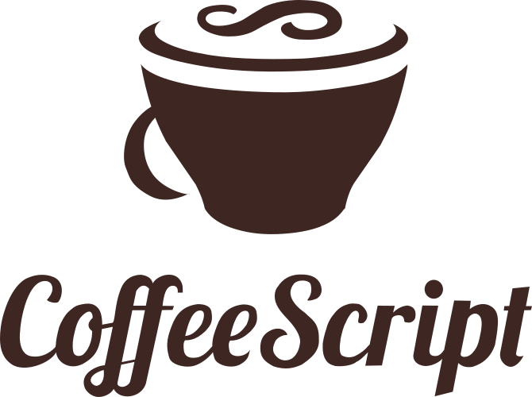
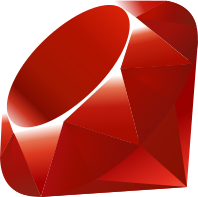
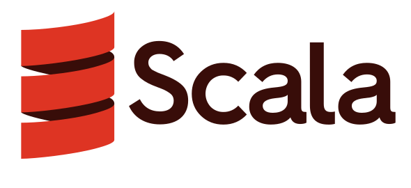

BJ Dela Cruz
I am a results-driven leader with 10+ years of industry experience in applying secure coding practices to software projects. I am skilled in gathering requirements from customers, balancing multiple projects, and prioritizing tasks. I am an expert at reducing technical debt, remediating security vulnerabilities, and improving application performance. My main interests include cloud computing, cybersecurity, and developing applications for mobile devices and the web.
Bureau of the Fiscal Service, U.S. Department of the Treasury
- Lead IT Specialist (APPSW), July 2021 - Present
- IT Specialist (APPSW), October 2019 - July 2021
NIC Hawaii
- Java Developer, September 2015 - May 2016 | October 2016 - October 2019
University of Hawaii
- Java Web Developer, March 2014 - May 2015
Referentia Systems Incorporated
- Software Engineer, August 2011 - December 2013
University of Hawaiʻi at Mānoa
- Master of Science, Computer Science, May 2011
- Bachelor of Science, Computer Science, December 2008
Katas are short programming exercises that focus on improving skills and techniques. Click on the name of a programming language to go to a BitBucket repository that contains my solutions.







- CompTIA Cloud+, August 20, 2015 - August 20, 2027
- CompTIA CySA+, August 12, 2020 - August 12, 2026
- CompTIA Security+, July 27, 2015 - August 12, 2026
- CompTIA CASP+, May 25, 2017 - May 25, 2026
- CompTIA PenTest+, November 5, 2020 - May 25, 2026
- (ISC)2 CCSP, September 16, 2019 - September 30, 2025
- (ISC)2 SSCP, August 1, 2021 - July 31, 2024
- (ISC)2 CSSLP, April 25, 2018 - April 20, 2024
- (ISC)2 CISSP, March 26, 2019 - March 31, 2024
- LPIC-1, September 8, 2018 - September 8, 2023
- Android Certified Application Developer
- Arcitura Certified Cloud Professional
- Certificate of Cloud Security Knowledge (CCSKv4)
- CLA - C Certified Associate Programmer
- CLE - C Certified Entry-Level Programmer
- CPA - C++ Certified Associate Programmer
- CPE - C++ Certified Entry-Level Programmer
- CompTIA Linux+ Powered by LPI
- CompTIA Mobility+
- CompTIA Project+
- CompTIA Server+
- CompTIA Storage+ Powered by SNIA
- EXIN Secure Programming Foundation
- Flutter Certified Application Developer
- ISTQB Certified Tester, Foundation Level
- JSE - Certified Entry-Level JavaScript Programmer
- Lean Six Sigma Green Belt Certification (The Council for Six Sigma Certification)
- Lean Six Sigma White Belt Certification (The Council for Six Sigma Certification)
- Lean Six Sigma Yellow Belt Certification (The Council for Six Sigma Certification)
- Microsoft 365 Certified: Fundamentals
- Microsoft Certified: Azure AI Fundamentals
- Microsoft Certified: Azure Data Fundamentals
- Microsoft Certified: Azure Fundamentals
- Microsoft Certified: Power Platform Fundamentals
- Microsoft Certified: Security, Compliance, and Identity Fundamentals
- Oracle Certified Expert Java EE 6 JPA Developer
- Oracle Certified Master Java EE 6 Developer
- Oracle Certified Professional Java EE 7 Application Developer
- Oracle Certified Professional Java SE 6 Programmer
- Oracle Certified Professional Java SE 7 Programmer
- Oracle Certified Professional Java SE 8 Programmer
- Oracle Certified Professional Java SE 11 Programmer
- PCAP - Certified Associate in Python Programming
- PeopleCert Lean - IASSC® Certified Lean Practitioner™
- Spring Certified Professional